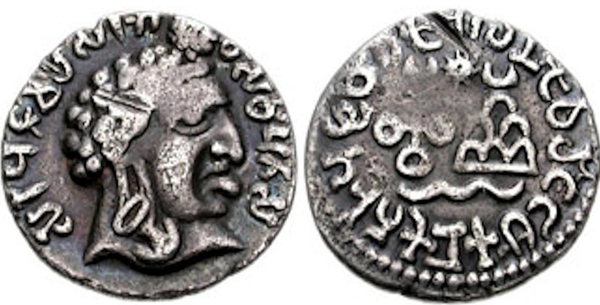
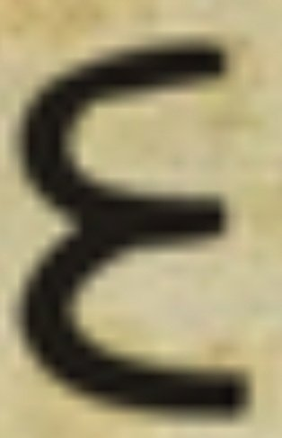
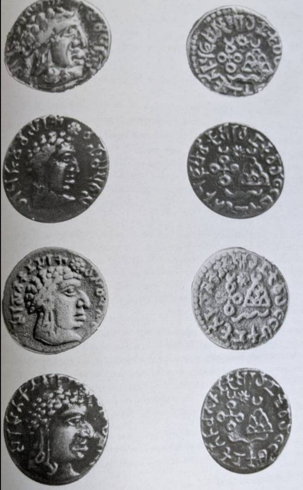
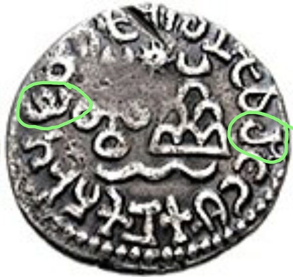
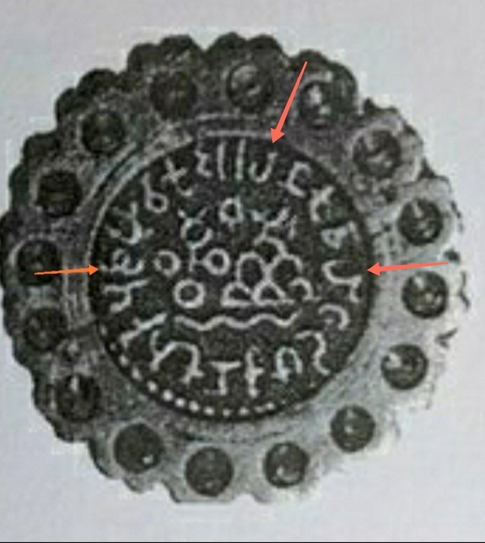

శాతవాహనులు
పరిచయం
తెలుగు నేలపై మొట్టమొదటి బలమైన సామ్రాజ్యం — శాతవాహనులది. సిముకుని నాయకత్వంలో పుట్టిన ఈ రాజ్యం, క్రీ.పూ. ౧వ శతాబ్దం నుంచి క్రీ.శ. ౩వ శతాబ్దం వరకు తెలుగు నాడును పాలించింది.
వీరు వ్యవసాయం మరియు మార్పిడిని బలపరచి, నాణేల ముద్రణ ద్వారా రోమన్ ప్రపంచంతో మార్పిడి సంబంధాలు నెలకొల్పారు. అమరావతి, నాగార్జునకొండలను గొప్ప సాంస్కృతిక కేంద్రాలుగా తీర్చిదిద్దారు. తెలుగు మరియు ప్రాకృత భాషలు, బ్రాహ్మి లిపిని పరిపాలనలో వాడుతూ — తెలుగు నేల రాజకీయ–సాంస్కృతిక గుర్తింపుకు పునాదిగా నిలిచారు.
వంశ చరిత్ర & పాలకులు
సిముకుడు
వంశ స్థాపకుడు. తెలుగు నేలపై ఈ మహా సామ్రాజ్యానికి పునాది వేశాడు.
సాతకర్ణి ౧
గోదావరి లోయకు రాజ్యాన్ని విస్తరించారు. "దక్షిణాపథ ప్రభువు" అనే బిరుదు పొందారు.
హాళ
ప్రసిద్ధ కవి-రాజు. ప్రాకృత గ్రంథం గాహా సత్తసైని సంకలనం చేశారు.
గౌతమీపుత్ర శాతకర్ణి
సామ్రాజ్యాన్ని పునరుద్ధరించి, తెలుగు ప్రాంతంలో రాజ్య ప్రభావాన్ని మరింత పెంచారు. శక, యవన, పహ్లవులను ఓడించిన వీరుడు.
వాసిష్ఠీపుత్ర పులోమావి
ఆంధ్ర దిశగా విస్తరించి, ఈ ప్రాంతంలో నాణేలు మరియు శాసనాలు వదిలిపెట్టారు.
యజ్ఞ శ్రీ శాతకర్ణి
చివరి గొప్ప రాజు. కృష్ణా-గోదావరి ప్రాంతంలో ఈయన నాణేలు విరివిగా లభించాయి.
విజయశ్రీ
శ్రీ పర్వతానికి "విజయపురి" అనే పేరు నిర్ణయించిన రాజు.
పులోమావి ౩
శాతవాహన వంశంలో చివరిగా నమోదైన రాజు.
నాణేలు & ఆభరణాలు (క్రీ.శ. 1వ శతాబ్దం)


శాతవాహనులు ఎలా తెలుగువారు?
మీరు చూస్తున్న నాణెం బ్రాహ్మి లిపిలో వాడబడిన నాణెం

నాణెం ముందుభాగంలో రాజు ముఖం ఉంది. దాని చుట్టూ బ్రాహ్మి లిపిలో ఇలా వ్రాయబడి ఉంది:
అరహణకు వాహిట్టి మాకణకు తిరు పుళుమావికు [Arahaṇaku Vāhitti Mākaṇaku Tiru puLumāviku]
పై చిత్రంలో కనిపించే అక్షరాలు శాతవాహనుల లిపిని అనువదిస్తున్నాయి. అందులో ప్రత్యేకమైన "హ" గుర్తు ఉంది, మరొక ప్రత్యేక అక్షరం "ళ" (𑀚) కూడా వాడబడింది.
ఇది భట్టిప్రోలు లిపికి చెందినది. ఈ "ళ" అనే అక్షరం మౌర్యుల బ్రాహ్మి లిపిలోను, తమిళ బ్రాహ్మి లిపిలోను లేదు. అందువల్ల ఆ నాణెంపై వాడిన భాష తెలుగు అని తెలుస్తుంది.
ఈ గుర్తు తో పాటు, మరో అక్షరం కూడా ఉంది. అది "జ" అనే గుర్తు. అది పైన చిత్రంలో "E" లాగా కనిపిస్తుంది. ఈ "జ" అనే అక్షరం మౌర్యుల బ్రాహ్మి లిపిలోను, భట్టిప్రోలు లిపిలోను ఉంది. కాని తమిళ-బ్రాహ్మి లిపిలో లేదు.

శాతవాహన రాజులు తమ రెండు భాషల నాణేలలో పాత తెలుగు–ద్రావిడ పదాలను చాకచక్యంగా వాడారు.
"అరహణకు వాహిట్టి మాకణకు తిరు పుళుమావికు"
"అరహణకు" - గౌరవానికి యోగ్యుడు, రాజ్యానికి తగినవాడు. ఇప్పటి తెలుగులో మనం అర్హత అని వాడుతాం. వాళ్ళు ఇక్కడ స్పష్టంగా 'హ - 𑀳' అని వాడారు।
మరియు వారు వాడిన "హ" అక్షరం శాతవాహనుల మార్చిన ప్రత్యేక రూపం. ఇక్కడ హ ఎడమవైపు తెరుచుకుంటుంది, అది మములగా కుడి వైపున తెరుచుకుంటుంది "హ" (𑀳)।
ఈ గుర్తు ప్రాకృత బ్రాహ్మి లిపిలోను, భట్టిప్రోలు బ్రాహ్మి లిపితోను స్పష్టంగా ఉంది। అలాగే తమిళ బ్రాహ్మి లిపిలో ఈ గుర్తు అసలే లేదు। ఎందుకంటే తమిళంలో "హ" అనే అక్షరం ప్రాచీన కాలం నుంచే వాడుకలో లేకుండా పోయింది।
అందువల్ల శాతవాహనుల ప్రత్యేకమైన ఎడమవైపు తెరుచుకునే "హ" గుర్తు వాడకం, అలాగే ఆంధ్ర భట్టిప్రోలు లిపిలోని తెలుగు ప్రత్యేక అక్షరం "ళ" (𑀚) వినియోగం — ఇవి ఆ నాణెంపై వాడిన భాష తెలుగుద్రావిడము అని మరింత బలంగా చూపిస్తున్నాయి.
 
అలాగే వారు వాసిష్టి బదులు "వాహిట్టి" అని జాగ్రత్తగా "హి" అనే గుర్తునే వాడారు
"హతకనికు" అనే రూపం "శాతకనికు" అనే పేరును చూపించేందుకు వాడిన రూపం.
"మాకణకు" అనేది పాత ద్రావిడ పదం అది మగ బిడ్డకు/కుమారునికి అని వాడే వారు - ఇప్పటి తెలుగులో అది మగనుకు/మగనికి'.
అరహణకు, మాకణకు, పుళుమావికు" వంటి పదాలు అచ్చుతో ముగీయడం తెలుగు భాష లక్షణం కాబట్టి అది తెలుగని తెలుస్తుంది
అది తమిళమైతే ఆ పదాలు "అరచన్, మకన్, పుళుమావికన్"లా వ్యంజనంతో "-న్" తో ముగిసేవి.కానీ నాణెంపై ఉన్న పదాలు అచ్చుతో ముగుస్తున్నాయి కాబట్టి, ఆ రెండు భాషల నాణెంలో కనిపించిన భాష పాత తెలుగు అని స్పష్టంగా తెలుస్తుంది.
ఆంధ్ర శాతవాహన రాజులు తమ నాణెాలలో తెలుగుకు ప్రత్యేకమైన అచ్చుతో ముగిసే స్వభావాన్ని కావాలని వాడారు। దాంతో తమ ఆంధ్ర–తెలుగు రాజ్య స్వరూపాన్ని ప్రజలకు తెలియజేశారు। ఇది ముందుగా హాళ శాతకర్ణి తన రచనలో చేసిన ప్రయత్నాన్ని కొనసాగించినట్లే కనిపిస్తుంది।
శాతవాహనులు వాడిన ఎడమవైపు తెరుచుకునే "హ" అక్షరం వారి శాసనాల్లో కూడా కనిపిస్తుంది. ఉదాహరణకు పాండవ్లేని గుహలలోని, గుహ 3 శాసనంలో అదే "హ" రూపం ఉంది. ఆ శాసనాన్ని గౌతమీపుత్రుని తల్లి గౌతమి బాలశ్రీ వేయించారు.
Sa Ka Ya Va Na Pa Hla Va - స క య వ న ప హ్ల వ (1వ శతాబ్దపు శాతవాహన మార్పు చేసిన పాండవలేని గుహ 3 శాసన లిపి నుంచే నేటి తెలుగు లిపి ఎంతో సమీపంగా రూపుదిద్దుకున్నట్టు స్పష్టంగా కనిపిస్తుంది)
గౌతమీపుత్ర శాతకర్ణి బిరుదు "Sa Ka Ya Va Na Pa Hla Va Ni Su Dha Na' [సక యవన పహ్లవ నిసూదన] - అంటే శకులు, యవనులు, పహ్లవులను జయించినవాడు. ఇక్కడ కూడా శాతవాహనులు ఎడమవైపు తెరుచుకునే "హ" అక్షరాన్నే వాడారు. అదే "హ" రూపం వారి రెండు భాషల నాణేలలో కూడా కనిపిస్తుంది.
"Pa Hla Va - ప హ్ల వ"
"అరహణకు", "మాకణకు", "తిరు" వంటి కొన్ని సాధారణ ద్రావిడ పదాలు మొదటగా ఆంధ్ర శాతవాహన రాజుల నాణేలు శాసనాల్లోనే కనిపిస్తాయి.
ఇలాంటి పదాలు దక్షిణ భారత దేశంలో ఎక్కడా వాడలేదు, తమిళులు కన్నా ముందే మనం తిరు అని వాడే వాళ్ళం, ఎందుకంటే ౨వ శతాబ్దం నాటి పాండియ రాజు శాసనాలలో కూడా కనబడలేదు। అందువల్ల ఈ పదాల వినియోగం శాతవాహన నాణే శాసనాల్లో ప్రత్యేకంగా నిలుస్తుంది.
ఈ ఆధారాల బట్టి శాతవాహనులు కచ్చితంగా తెలుగువారే అని. అర్హణకు-రాజు/మకనకు-కొడుకు/తిరు-ద్రావిడ పదం[సంస్కృత శ్రీ కి బదులు], ఇలాంటి సాధారణమైన ద్రావిడ పదాలు మొట్టమొదట తెలుగు వారే వాడారని చెప్పవచ్చు।